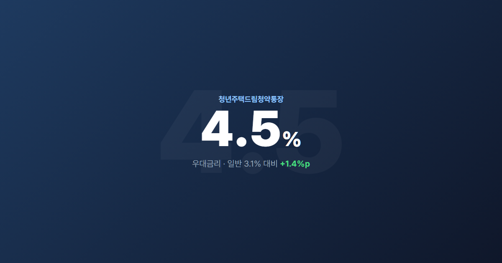
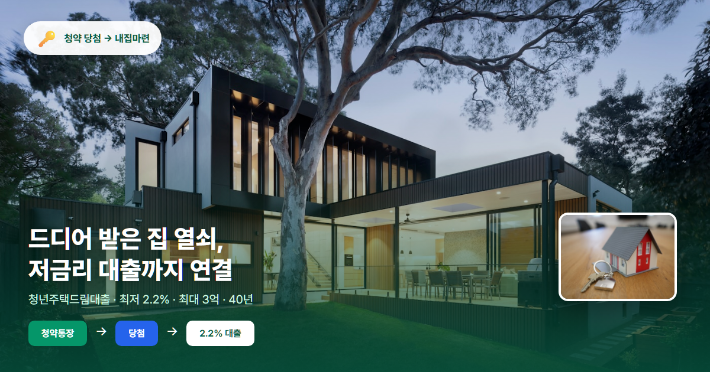

청년주택드림청약통장 2026 완벽정리 (4.5% 우대금리·가입조건·전환방법)
청년주택드림청약통장 가입·전환·청년주택드림대출 연계까지 한 번에
청약통장은 많은 분이 가입하지만, 청년만 받을 수 있는 특별 우대 통장이 있습니다. 바로 청년주택드림청약통장인데요, 일반 청약통장보다 최고 1.7%p 높은 금리에 청년주택드림대출(최저 2.2%)까지 연계됩니다. “최고 4.5% 금리 + 대출까지”— 내집마련을 준비하는 청년이라면 꼭 알아두셔야 할 상품입니다.
청년주택드림청약통장이란?
청년주택드림청약통장은 기존 청년우대형 주택청약종합저축을 대체·발전시킨 상품으로, 2024년 2월 출시되어 2026년 현재도 정상 운영 중입니다. 일반 주택청약종합저축 대비 우대금리 1.7%p가 추가되며, 청약 당첨 후 청년주택드림대출로 이어지는 구조라 “저축 → 청약 → 대출”을 하나의 흐름으로 설계할 수 있습니다. 단순 저축이 아니라 내집마련 패키지로 이해하시면 됩니다.
핵심 요약
| 항목 | 내용 |
|---|---|
| 가입 연령 | 만 19~34세 |
| 소득 기준 | 연 5,000만원 이하 |
| 우대 금리 | 최고 4.5% (일반 대비 +1.7%p) |
| 비과세 혜택 | 이자소득 500만원까지 |
| 소득공제 | 연 600만원 한도, 40% 공제 |
| 월 납입 한도 | 100만원 |
| 가입 은행 | 9개 시중은행 |
가입 조건
기본 자격
- 만 19~34세 청년 (병역 이행 기간 최대 6년 연령 제외 가능)
- 무주택 세대주 또는 세대원 (예비 세대주 포함)
- 대한민국 국적 보유, 주민등록상 거주지 확인 가능해야 합니다
소득 기준 (가입 시점)
- 근로소득자: 직전 과세기간 총급여 5,000만원 이하
- 사업·기타소득자: 종합소득금액 3,800만원 이하
- 취업 준비생·프리랜서도 소득 증빙이 되면 가입 가능합니다
- 입사 1년 미만: 소득 신고 이력이 없으면 최근 급여명세서로 연환산 소득 산정 후 가입 가능
- 면세소득자: 현역·사회복무요원 등 면세소득만 있는 경우, 전년도 복무 이력이 있으면 가입 대상에 포함
무주택 요건
- 본인 무주택 필수
- 예전 청년우대형은 세대주만 가입됐지만, 청년주택드림은 무주택 세대원도 가입 가능합니다
- 우대금리 적용 시 세대원 전체 무주택이 일반적
- 정부24에서 발급하는 무주택 확인서로 증빙합니다
금리 구조 상세

기본금리 (가입기간별)
청년주택드림청약통장의 기본금리는 가입 후 경과 기간에 따라 달라집니다. 정부 고시에 따라 수시로 조정되므로 가입 전 은행 앱에서 최신 금리를 확인하세요.
- 1개월~1년: 무이자
- 1년~2년: 약 1.7% (정부 고시 변동)
- 2년 이상: 약 2.5~3.1%
우대금리 (핵심)
추가 혜택
- 비과세: 이자소득 500만원까지 (15.4% 세금 면제 효과)
- 소득공제: 연 600만원 납입 한도, 40% 공제 → 최대 240만원 절세
가입 방법
가입 가능 은행 (9개)
우리·신한·하나·국민·IBK기업·NH농협·BNK부산·DGB대구·BNK경남은행에서 가입할 수 있습니다. 은행마다 모바일 비대면 가입 지원 여부가 다르니, 거래 중인 은행을 우선 확인해 보세요. 각 은행 앱에서 비대면 가입(신분증·안면 인증·소득 확인)이 가능한 경우가 많습니다.
필요 서류
- 신분증
- 소득 증빙 (근로소득원천징수영수증 등)
- 무주택 확인서 (정부24 발급)
- 주민등록등본
기존 청약통장 → 전환 방법 ⭐
전환 가능 대상
기존 주택청약종합저축 가입자 중 청년주택드림 가입 조건을 충족하면 전환할 수 있습니다.
전환 절차
- 가입 조건(나이·소득·무주택) 충족 확인
- 가입 은행 영업점 방문 또는 모바일 앱(KB스타뱅킹, 신한 SOL 등) 접속
- '청년 주택드림 청약통장 전환' 메뉴 선택 → 소득확인증명서 제출
- 기존 통장 해지 → 청년주택드림 신규 가입
- 납입인정금액·납입회차 유지 (청약 1순위 자격 보존)
전환 시 주의사항
- ⚠️ 전환원금에는 우대이율 미적용 — 신규 납입분부터 우대금리
- ⚠️ 이미 당첨된 청약 계좌는 전환 불가
- 기존 청년우대형 가입자는 자동 전환됩니다
- 소득 증빙은 작년 기준, 미확정 시 전전년도 자료 가능
- 청약 1순위 자격은 유지되나, 은행별 전환 시점·서류를 확인하세요
청년주택드림 대출 연계 ⭐⭐

대출 자격
- 청년주택드림청약통장으로 청약 당첨된 자
- 만 39세 이하 무주택 세대주
- 미혼: 연소득 7,000만원 이하 / 기혼: 1억원 이하
- 분양·매매·임대(전세) 등 상품 유형별 세부 조건이 있으니 HF공사 안내를 참고하세요
대출 조건
LTV 분양가 80% 이내, 매매가 초과 불가 · 대상 주택 분양가 6억·전용 85㎡ 이하
핵심 메리트
청약 당첨 직후 저금리 대출을 받을 수 있어, 일반 디딤돌(2.65~3.95%)보다 유리한 경우가 많습니다. 청약통장 + 당첨 + 대출까지 연결하면 내집마련 로드맵이 한 번에 완성됩니다.
💡 청년주택드림 활용 전략
- 가입 즉시 월 10만원 이상 자동이체 설정
- 청약 가점 쌓기와 병행
- 무주택 기간 유지 — 우대금리의 핵심 조건
- 당첨 지역은 실거래가 지도로 미리 조사
- 연말정산 소득공제 절세 효과도 챙기기
자주 묻는 질문 (FAQ)
Q1. 군 복무 중인 청년도 가입 가능한가요?
병역 이행 기간은 연령 계산에서 최대 6년 제외됩니다. 만 19~34세(병역 제외 적용) 요건과 소득·무주택 기준을 충족하면 가입 가능합니다. 군 복무 중 소득이 없다면 무소득자 기준으로 심사됩니다.
Q2. 학생도 가입할 수 있나요?
소득이 없거나 기준 이하이고 무주택이면 가능합니다. 다만 소득 증빙·무주택 확인 서류가 필요하며, 아르바이트 소득이 있다면 근로소득원천징수영수증을 준비하세요.
Q3. 만 35세가 되면 자동 해지되나요?
가입 연령 초과 시 일반 주택청약종합저축으로 전환됩니다. 우대금리는 청년 요건 충족 기간에만 적용되며, 전환 후에도 기존 납입 인정액과 청약 순위는 유지됩니다.
Q4. 일반 청약통장에서 전환하면 손해 보나요?
기존 납입 인정액은 유지되므로 청약 자격 측면에서 손해는 적습니다. 다만 전환원금에는 우대이율이 안 붙으므로, 앞으로 납입할 금액이 많을수록 전환 이득이 큽니다. 이미 2년 이상 납입했다면 전환 타이밍을 서둘러 보세요.
Q5. 대출 받으면 우대금리는 어떻게 되나요?
주택 취득·대출 실행 시점부터 우대금리 적용 조건이 달라질 수 있습니다. 대출 전후 우대금리·비과세 적용 여부는 은행·주택도시기금 안내를 확인하세요. 일반적으로 주택 보유 시 청약통장 우대금리는 중단되는 경우가 많습니다.
마무리
청년주택드림청약통장은 오늘 가입하지 않으면 1년치 우대금리·절세 혜택을 놓칠 수 있습니다. 만 34세 이하라면 조건을 먼저 확인하고, 기존 청약통장 보유자는 전환도 검토해 보세요. 월세 지원이 필요하다면 청년월세지원사업과 함께 병행하는 전략도 좋습니다. 청약 지역과 가격대는 미리 실거래가로 확인하는 것이 당첨 후 대출까지 이어지는 핵심입니다.

본 글은 2026년 6월 기준 일반 정보이며, 금리·소득 기준·대출 조건은 정부 고시·은행별로 달라질 수 있습니다. 가입·전환·대출 전 해당 은행·HF공사에서 최종 확인하시기 바랍니다.